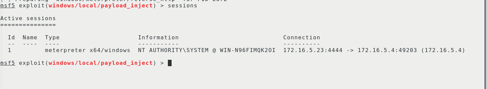

工具分享
链接: https://pan.baidu.com/s/1dyNrdX-MJJadb7YOWBP3Dw 提取码: 4rhw
文件树
1 | ├── 48643_20161201044301.zip |
工具运行
进入目录执行先把服务端开好
命令语法:./teamserver ip地址 密码
如图:
客户端连接:
命令:java -XX:ParallelGCThreads=4 -XX:+AggressiveHeap -XX:+UseParallelGC -jar cobaltstrike.jar
开启汉化的命令是:java -Dfile.encoding=UTF-8 -javaagent:CobaltStrikeCN.jar -XX:ParallelGCThreads=4 -XX:+AggressiveHeap -XX:+UseParallelGC -jar cobaltstrike.jar
工具分享
链接: https://pan.baidu.com/s/1dyNrdX-MJJadb7YOWBP3Dw 提取码: 4rhw
文件树
1 | ├── 48643_20161201044301.zip |
工具运行
进入目录执行先把服务端开好
命令语法:./teamserver ip地址 密码
如图:
客户端连接:
命令:java -XX:ParallelGCThreads=4 -XX:+AggressiveHeap -XX:+UseParallelGC -jar cobaltstrike.jar
开启汉化的命令是:java -Dfile.encoding=UTF-8 -javaagent:CobaltStrikeCN.jar -XX:ParallelGCThreads=4 -XX:+AggressiveHeap -XX:+UseParallelGC -jar cobaltstrike.jar
第一次连接的服务器会显示服务端的SSL 证书的SHA256哈希值这个直接确定就可以了
如图:

然后点击连接就可以了

里面的目录就不介绍了,如果不懂的可以看https://wbglil.gitbooks.io/cobalt-strike/content/cobalt-strikeji-ben-shi-yong/ji-ben-shi-yong-jie-shao.html
制作木马
在制作木马之前先要创建一个监听器(类似msf的payload)

点击此按钮后点击add

然后进行配置

名字就是给监听器取的名字
payload反弹的方式(有beacon字符串的可以反弹到cs里面,有foreign可以用来把shell传递到其他工具)
主机:反弹到哪个ip上
端口:反弹到的端口
配置完成后点击save(遇到其他窗口点击确认就可以了)
如图代表添加成功:

然后制作木马
如图添加一个exe的木马

对木马进行配置,
监听器:选择自己生成监听器的名字
输出:代表输出的格式
然后点击Generate

运行该木马

派送一个shell给msf
首先也要添加一个监听器
payload要选择foreign类型的
主机填写是反弹到的ip
端口填写反弹到的端口

配置完Cobalt Strike后配置msf
如图:

然后回到Cobalt Strike,右击目标选择增加会话

然后选择要派生给msf的那个监听器，在点Choose就可以了。

然后等个1分钟左右就可以看到msf收到了传递过来的shell

把msf的shell传递个Cobalt strike
首先也要创建一个监听器,因为前面已经创建了一个名字为cs的监听器，所以我们这里直接使用那时候创建的那个监听器就可以了,然后我们对msf进行配置
先查看自己的session id

然后在对msf进行配置

然后就可以看到cobalt strike主机上线了